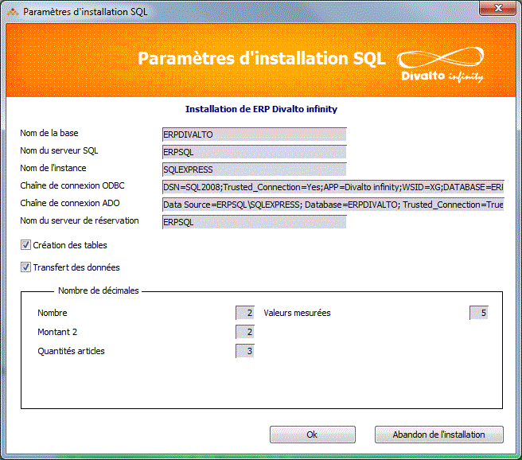

Le connecteur SQL accède à la base de données par une connexion ADO.net.
L’installateur de l'ERP demande les paramètres suivants pour créer les tables et copier les données dans la base SQL :

|
Nom de la base |
Il s’agit du nom de la base de données (par exemple ERPDivalto). L’installateur crée automatiquement un répertoire portant ce nom sous le répertoire Divalto du serveur de données (par exemple /Divalto/ERPDivalto). Il y copie les dictionnaires de données et le fichier paramètre FHSQL qui contient la chaîne de connexion à la base SQL. Il ajoute une entrée de type "base SQL" dans la table des serveurs. |
|
Nom du serveur SQL |
Il s’agit du nom NETBIOS du serveur SQL. |
|
Nom de l’instance |
S’il y a plusieurs instances de Microsoft SQL serveur sur le serveur de données, on indiquera ici le nom de l’instance. |
|
Chaîne de connexion ODBC |
Il convient ici de sélectionner la source de données ODBC permettant à Xlan d’accéder à la base. La sélection renvoie la chaîne de connexion ODBC. |
|
Chaîne de connexion ADO |
Utilisée par le connecteur SQL, elle est calculée automatiquement à partir des paramètres introduits précédemment, mais peut être adaptée en cas de nécessité. |
|
Nom du serveur de réservation |
Il s’agit du nom du serveur Xlan (généralement, c’est le même que le serveur SQL). Le nom du serveur de réservation est stocké dans le fichier paramètres des connexions ADO.net (connexions.xml). |
|
Création des tables Transfert des données |
Ces deux options permettent respectivement :
Remarque : En cas d'installation successive de l'ERP puis de la visite guidée dans la même base, décochez ces deux cases lors de l'installation de l'ERP afin de ne créer les tables et transférer les données qu'une seule fois (au moment de l'installation de la visite guidée). |
|
Nombre de décimales |
Ce cadre concerne les données numériques à "décimales variables". Diva gère jusqu’à 10 classes de décimales variables. Pour chaque classe, on indique le nombre de décimales à affecter aux valeurs numériques de cette classe. L’ERP Divalto utilise les 4 classes suivantes (attention : ce paramétrage doit impérativement correspondre à celui des dossiers dans l’ERP Divalto) :
Contrairement au fonctionnement avec un fichier Harmony, le nombre de décimales d'une classe est fixe pour une colonne donnée d'une table et sa valeur doit être connue lors de la création des tables. Le fichier paramètres Decimales.txt donne la correspondance entre la classe et le libellé affiché dans le programme d’installation.
|
Emplacement du fichier des connexions
L’installateur SQL crée le fichier connexions.xml dans le répertoire /Divalto/Sys s’il n’existe pas. Si le fichier de connexions existe déjà, l’installateur n’y touche pas mais crée un fichier de connexions portant le nom de la base de données avec l’extension .xml (par exemple ErpDivalto.xml) dans le sous-répertoire /Divalto/BasedeDonnees (par exemple /Divalto/ErpDivalto/ErpDivalto.xml).
La personne qui installe pourra ensuite copier/coller la connexion correspondante dans le fichier des connexions (/Divalto/Sys/connexions.xml).